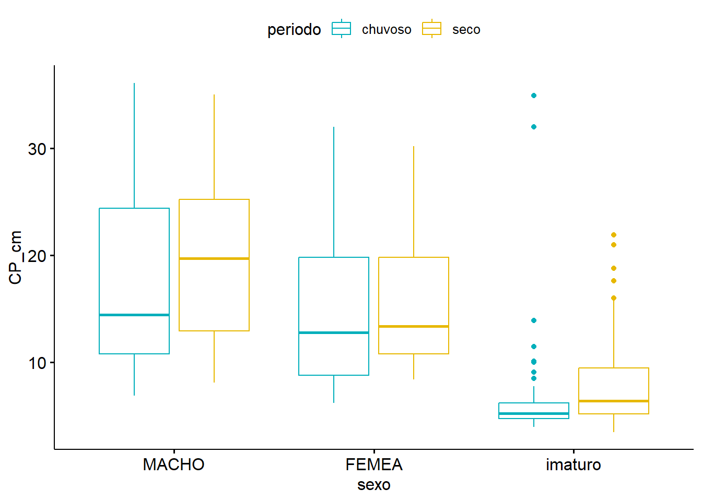
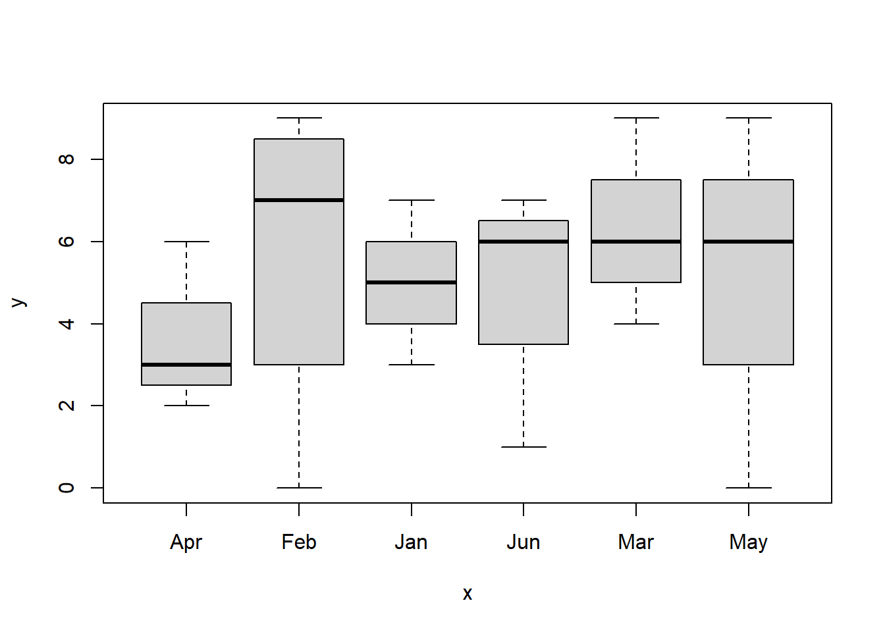

6 R Modulo 2 - Tipos de Dados no R
Apresentação
O R é uma linguagem de expressão com uma sintaxe muito simples (veja TEAM, R. D. C. (1999-2024)). Ela é sensível a maiúsculas e minúsculas, como a maioria dos pacotes baseados em UNIX, então A e a são símbolos diferentes e se refeririam a variáveis diferentes. O conjunto de símbolos que podem ser usados nos nomes do R depende do sistema operacional e do país em que o R está sendo executado (tecnicamente, da localidade em uso). Normalmente, todos os símbolos alfanuméricos são permitidos (e em alguns países isso inclui letras acentuadas), além de . e _, com a restrição de que um nome deve começar com . ou uma letra, e se começar com ., o segundo caractere não deve ser um dígito. Os nomes são efetivamente ilimitados em comprimento.
Comandos elementares consistem em expressões ou atribuições. Se uma expressão for dada como um comando, ela é avaliada, impressa (a menos que seja especificamente tornada invisível) e o valor é perdido. Uma atribuição também avalia uma expressão e passa o valor para uma variável, mas o resultado não é automaticamente impresso.
Os comandos são separados por um ponto e vírgula (;) ou por uma nova linha (Enter). Comandos elementares podem ser agrupados em uma única expressão composta por chaves ({' and '}).
Comentários podem ser colocados em quase qualquer lugar, começando com uma marca de hash (#), e tudo até o final da linha é um comentário.
Se um comando não estiver completo no final de uma linha, o R fornecerá um prompt diferente, por padrão + (ao invés do tradiocional >, nas linhas seguintes e continuará a ler a entrada até que o comando seja sintaticamente completo. Este prompt pode ser alterado pelo usuário. Geralmente, omitiremos o prompt de continuação e indicaremos a continuação apenas recuando.
As linhas de comando digitadas no console são limitadas a cerca de 4095 bytes (não caracteres).
No R, uma linguagem de programação amplamente utilizada para análise de dados e estatísticas, os tipos e estruturas de dados desempenham um papel fundamental na manipulação e organização das informações.
6.1 Tipos e estruturas de dados no R
No R, uma linguagem de programação amplamente utilizada para análise de dados e estatísticas, os tipos e estruturas de dados desempenham um papel fundamental na manipulação e organização das informações. Você vai conhecer esses tipos de estruturas de dados a seguir, mas antes se familiarize com como o R funciona.
Para começar a usar o R e analisar os dados do Projeto PPBio, abra o RStudio, verifique sua interface (Figura 6.1) e siga as instruções a seguir.

Figura 6.1: Interface típica do RStudio e nome dos paineis ou janelas.
6.2 Mensagens de erro e avisos no R
No contexto da linguagem de programação R, mensagens de erro (errors) e mensagens de aviso (warnings) que aparecem em vermelho no painel de console. Elas são formas de feedback do sistema que indicam problemas ou situações potencialmente problemáticas durante a execução do código. Aqui está uma breve explicação de cada um:
- Erro (Error):
- Um erro ocorre quando algo no código não está correto ou não pode ser executado como esperado.
- Isso pode ser causado por sintaxe incorreta, uso incorreto de funções, operações inválidas, referências a objetos que não existem, entre outros problemas.
- Quando ocorre um erro, a execução do código é interrompida e uma mensagem de erro é exibida no console em vermelho, indicando o tipo de erro e, muitas vezes, a linha onde ocorreu.
- Aviso (Warning):
- Não indica erro. Um aviso é emitido quando algo no código pode resultar em um comportamento indesejado ou em resultados inesperados, mas não interrompe necessariamente a execução do código.
- Os avisos geralmente indicam situações que merecem atenção, como conversões de tipos de dados que podem perder informações ou funções que estão sendo usadas de maneira que pode levar a resultados questionáveis.
- Os avisos são exibidos em vermelho no console e fornecem informações sobre a natureza do aviso e, possivelmente, como abordá-lo.
É importante prestar atenção a mensagens de erro e avisos, pois eles fornecem insights sobre problemas em seu código ou potenciais fontes de comportamento inesperado. Resolver erros é fundamental para que o código funcione conforme o esperado. Embora os avisos não interrompam a execução, investigá-los pode ajudar a evitar problemas futuros ou melhorar a qualidade do código.
6.3 O que é um script e qual sua diferença para um código?
Em programação R, tanto “código” quanto “script” se referem a sequências de instruções escritas na linguagem de programação R (veja também Snippet e chunk). No entanto, há uma diferença sutil em como esses termos são geralmente usados:
- Código:
Em R, “código” geralmente se refere a linhas individuais ou blocos de instruções de programação R que realizam tarefas ou operações específicas. O código pode ser escrito de forma interativa em um console R ou dentro de um arquivo de script. O código pode consistir em declarações simples, como atribuir valores a variáveis, realizar cálculos, definir funções ou chamar funções de pacotes.
- Script:
Um “script” em R refere-se a um arquivo contendo uma série de instruções de código R. Scripts R são essencialmente arquivos de texto contendo uma sequência de comandos e declarações R que podem ser executados em conjunto. Os scripts R permitem que os usuários organizem seu código em unidades reutilizáveis e estruturadas. Os scripts R geralmente têm a extensão de arquivo “.R”.
Em resumo, enquanto “código” se refere a instruções individuais de programação R, “script” se refere a um arquivo contendo uma coleção de código R, geralmente usado para executar tarefas ou análises maiores de forma estruturada e organizada.
Agora você pode começar a escrever seu código no console. Digite “Início do R Módulo” no console clique em Run (no canto superior direito do painel de edição de código) ou Ctrl+Enter e veja o que acontece:
"Início do R Módulo"## [1] "Início do R Módulo"O R mostra o que você escreveu, e apresenta este [1] do lado. Isso significa que seu resultado foi apresentado na primeira linha. Como você pode ver, o R imprime de volta (no Console) o resultado de comandos que você dá. Você agora pode tentar as operações basicas.
600+66## [1] 666Cálculos repetitivos podem ser automatizados usando um loop
x <- 10
x## [1] 10for (i in 1:5) {x+1->x}
x## [1] 15Aqui o número 1 foi somado cinco vezes ao valor de x que foi armazenado cada vez como x (substituindo o valor anterior) até chegar em 15. Na prática o R calculou 10+1=11, 11+1=12, 12+1=13, 13+1=14, 14+1=15.
Note que os : foi usado para produzir uma seqüência de números de 1 a 5.
1:5## [1] 1 2 3 4 5O R usa os seguintes símbolos para as operações básicas:
`+` Adição
`-` Subtração
`/` Divisão
`*` Multiplicação
`^` Potência
`sqrt` Raiz quadrada (função)
`log` Logarítmo (função)Teste agora outras possibilidades com as operações básicas (veja BEASLEY (2004) pags 7-10 para outros exemplos de cáculos básicos).
Em sua apostila “Conversando com o R usando 57 palavras” MELO (2014) ressalta que a programação em R “ajuda no sentido de prover métodos para resolvermos um problema ou entendermos uma análise”. Isso porque, primeiro, temos que reunir os elementos fundamentais e informações necessários, depois identificar e dar nomes a esses elementos, para apenas depois disso, decompor nosso problema em suas partes e, finalmente, colocar essas partes em sequência lógica (MELO, 2014).
A forma linear (passo-a-passo), mas hierarquicamente estruturada, da programação em R, permite uma construção intuitiva e lógica do raciocínio associado a cada análise, que, com o tempo, se torna parte cotidiano das nossas análises de dados. Assim como, na Língua Portuguesa, aprendemos o alfabeto, depois as palavras e eventualmente conversamos sem precisar pensar sobre a gramática e construção das frases.
6.4 Tipos e estruturas de dados no R
O R oferece uma variedade de tipos e estruturas de dados que permitem aos cientistas de dados e analistas manipular e organizar informações de forma eficiente. A escolha da estrutura de dados correta depende das necessidades específicas de análise e do tipo de dados que você está lidando.
- Tipos de Dados Básicos:
- Numéricos: Representam valores numéricos, como inteiros ou números de ponto flutuante.
- Caracteres: Armazenam texto e são usados para representar sequências de caracteres.
- Lógicos: Armazenam valores lógicos (TRUE ou FALSE), úteis para expressar afirmações condicionais.
- Complexos: Armazenam números complexos.
- Vetores:
- Os vetores são a estrutura de dados mais básica no R.
- Eles podem conter elementos de um único tipo de dado (exemplo: vetor numérico, de caracteres ou lógico).
- Os vetores são criados usando a função
c().
- Matrizes:
- Matrizes são vetores bidimensionais, onde os elementos são organizados em linhas e colunas.
- Todos os elementos de uma matriz devem ser do mesmo tipo de dado.
- Matrizes podem ser criadas usando a função
matrix().
- Data Frames:
- Data frames são estruturas de dados tabulares semelhantes a planilhas ou tabelas de banco de dados.
- Cada coluna de um data frame pode conter um tipo de dado diferente.
- Data frames são amplamente usados para armazenar e manipular conjuntos de dados.
- São frequentemente criados com funções como
data.frame()ou lidos de arquivos externos.
- Fatores:
- Fatores são usados para representar variáveis categóricas ou de fatores.
- São úteis para análises estatísticas e gráficos.
- Podem ser criados com a função
factor().
- Listas:
- Listas são estruturas de dados flexíveis que podem conter elementos de diferentes tipos.
- Os elementos de uma lista podem ser acessados por meio de índices ou nomes.
- Listas são criadas usando a função
list().
- Arrays:
- Arrays são estruturas multidimensionais que podem conter elementos de um único tipo de dado.
- São semelhantes às matrizes, mas podem ter mais de duas dimensões.
- Arrays são criados com a função
array().
- Tabelas Hash:
- Tabelas hash são estruturas de dados que associam chaves a valores.
- Não são nativas do R, mas podem ser implementadas com pacotes como o
hash.
6.5 Tipos de dados no R
6.5.1 Variáveis e tipos básicos de dados (Figura 6.2)
- Tipos de Dados Básicos:
- Numéricos: Representam valores numéricos, como inteiros ou números de ponto flutuante.
- Caracteres: Armazenam texto e são usados para representar sequências de caracteres.
- Lógicos: Armazenam valores lógicos (TRUE ou FALSE), úteis para expressar afirmações condicionais.
- Complexos: Armazenam números complexos.
Para guardar os valores em uma variável em R, usamos <- (operador de atribuição). Neste caso, o print automático não ocorre, e caso queira checar qual é o valor daquela variável, basta digitar seu nome novamente, ou utilizar o comando print(nome_da_variavel).
Vejamos:
a <- 5 + 3
a
print(a)
class(a)## [1] 8
## [1] 8
## [1] "numeric"Criamos um objeto do R chamado a que armazena o resultado de 5+3. Objetos são palavras ou letras às quais são atribuídos dados. A atribuição possibilita a manipulação de dados ou armazenamento dos resultados de análises (SILVA et al., 2022).
O objeto a é uma variável numérica, como você pode ver ao usar a função class(). Se quiser trabalhar com inteiros (integer), você deve defini-los como integer, através da função as.integer().
Vejamos:
var1 <- 3
var2 <- as.integer(3)
class(var1)
class(var2)## [1] "numeric"
## [1] "integer"A função class() tem o mesmo efeito que a função mode(). Faça o teste.
Em R, os dados também podem ser do tipo character, que é uma variável de texto (em outras linguagens pode ser conhecida como string) e logical (que em outras linguagens pode ser conhecida como boolean), e que assume os valores TRUE ou FALSE.
Exemplos:
b <- "Ola mundo"
c <- TRUE
class(b)
class(c)## [1] "character"
## [1] "logical"Uma função vem sempre seguida de parênteses () (no formato, função(x)), dentro dos quais colocamos os argumentos da função. Os argumentos, por sua vês, devem ser separados por vírgula ,. Os argumentos são informações adicionais que especificam certas particularidades para serem executadas pelas funções.
Usando a função log() como exemplo, temos:
log(x=20, base=10)## [1] 1.30103O argumento x= indica de qual valor queremos o log e o argumento base= indica qual base para o logaritmo o R vai usar.
Ou, em um segundo caso, podemos ter simplesmente a função sem nenhuma indicação de argumento:
log(20)## [1] 2.995732Muitas funções possuem opções padrões (default) para alguns de seus argumentos. No caso do log, se não for dado nenhum argumento o default do R é usar o log natural do valor entre parêntesis.
6.6 Estruturas de dados no R
Agora vamos falar das estruturas de dados no R (Figura 6.3).
- Vetores:
- Os vetores são a estrutura de dados mais básica no R.
- Eles podem conter elementos de um único tipo de dado (exemplo: numérico, caracteres ou lógico).
- Os vetores são criados usando a função
c().
Como ja foi dito, os vetores são uma sequência simples de elementos do mesmo tipo. Quando definimos uma variável como fizemos anteriormente, é criado um vetor com um elemento (vetor numérico, vetor de caractere, etc.).
O R opera em estruturas de dados nomeadas. A estrutura mais simples é o vetor numérico, que é uma entidade única consistindo de uma coleção ordenada de números. Para configurar um vetor chamado x, por exemplo, consistindo de cinco números, a saber, 1.4, 6.5, 3, 4 e 71.2, usa-se o comando R:
x <- c(1.4, 6.5, 3, 4, 71.2)Esta é uma instrução de atribuição usando a função c() (“combinar”), que neste contexto pode receber um número arbitrário de argumentos de vetor e cujo valor é um vetor obtido pela concatenação de seus argumentos de ponta a ponta.
Observe que o operador de atribuição (<-), que consiste nos dois caracteres ‘<’ (“menor que”) e ‘-’ (“menos”) ocorrendo estritamente lado a lado, e ele “aponta” para o objeto que recebe o valor da expressão. Na maioria dos contextos, o operador ‘=’ pode ser usado como uma alternativa.
Observe:
var1 <- 3
is.vector(var1)## [1] TRUEIsso explica aquele [1] que vimos no início do módulo. Quando você associa uma variável dessa forma, o R cria um vetor, e o valor que você definiu será o primeiro item deste vetor.
Para criarmos vetores com mais de um elemento, incluiremos os valores desejados dentro de um c() que significa combinar.
Veja o exemplo:
var1 <- c(3,6, 7.8, 332)
print(var1)
var2 <- c("Ola","tudo","bem")
print(var2)
var3 <- c(TRUE, FALSE, TRUE, TRUE, FALSE, FALSE, TRUE, TRUE, TRUE)
print(var3)## [1] 3.0 6.0 7.8 332.0
## [1] "Ola" "tudo" "bem"
## [1] TRUE FALSE TRUE TRUE FALSE FALSE TRUE TRUE TRUECaso você tente misturar os tipos, o R irá forçar para que os elementos sejam todos do mesmo tipo. Veja alguns exemplos:
- Matrizes:
- Matrizes são vetores bidimensionais, onde os elementos são organizados em linhas e colunas.
- Todos os elementos de uma matriz devem ser do mesmo tipo de dado.
- Matrizes podem ser criadas usando a função
matrix().
As matrizes são estruturas que correspondem às matrizes matemáticas, conjuntos de elementos com linhas e colunas. Assim como os vetores, todos os seus elementos sao do mesmo tipo. Existem algumas formas de criar uma matriz:
mat1 <- matrix(c(1,5,10,30,15,8),
nrow=3,
ncol=2,
byrow=TRUE)
print(mat1)## [,1] [,2]
## [1,] 1 5
## [2,] 10 30
## [3,] 15 8Ou
vec1 <- c(1, 5)
vec2 <- c(10, 30)
vec3 <- c(15, 8)
mat2 <- rbind(vec1, vec2, vec3)
print(mat2)
class(mat2)## [,1] [,2]
## vec1 1 5
## vec2 10 30
## vec3 15 8
## [1] "matrix" "array"Ou
a <- sample(c(0,1,5),10,replace=TRUE)
b <- sample(c(0,10,20),10,replace=TRUE)
c <- sample(c(0,5,10),10,replace=TRUE)
df1 <- data.frame(a,b,c)
df1## a b c
## 1 5 20 0
## 2 5 10 5
## 3 1 20 10
## 4 5 0 5
## 5 1 10 5
## 6 0 0 0
## 7 0 0 5
## 8 5 20 5
## 9 5 0 0
## 10 1 0 5Na primeira forma, definimos os elementos da matriz, o número de linhas e colunas através dos argumentos nrow e ncol, e se os elementos serão preenchidos ao longo das linhas (byrow = TRUE) ou ao longo das colunas (byrow = FALSE).
Na segunda forma, criamos dois vetores e então os juntamos através da função rbind(). Repare que na segunda matriz, o R nomeou automaticamente as linhas da matriz com os nomes dos vetores, ao invés de definir seus números.
Para selecionar itens de matrizes também utilizamos os colchetes, primeiro especificando a linha e depois a coluna que desejamos retornar:
mat1[2][1]## [1] 10- Data Frames:
- Data frames são estruturas de dados tabulares semelhantes a planilhas ou tabelas de banco de dados.
- Cada coluna de um data frame pode conter um tipo de dado diferente.
- Data frames são amplamente usados para armazenar e manipular conjuntos de dados.
- São frequentemente criados com funções como
data.frame()ou lidos de arquivos externos.
O Data Frame é a estrutura do R utilizada para armazenar elementos em forma de tabela, organizados em linhas e colunas. As colunas e linhas podem ser nomeadas. Você pode criar um data frame com a função data.frame():
df1 <- data.frame(c(1,2,3),c("baixo","medio","alto"),c(TRUE, TRUE, FALSE))
print(df1)## c.1..2..3. c..baixo....medio....alto.. c.TRUE..TRUE..FALSE.
## 1 1 baixo TRUE
## 2 2 medio TRUE
## 3 3 alto FALSEOu
df2 <- data.frame(Sp1=c(1,5,2,5,3), Sp2=c(21,8,10,7,18))
row.names(df2) <- LETTERS[1:5]
df2## Sp1 Sp2
## A 1 21
## B 5 8
## C 2 10
## D 5 7
## E 3 18É possivel plotar esse dataframe:
plot(df2, type='n'); text(df2, row.names(df2))
Dataframes ou Matrizes muito grandes são inviáveis de serem inseridas no ambiente do R através de digitação simples como mostrado anteriormente. Uma opção é usar a função read.table(text="") e colar a matriz de dados entre as aspas "..."
data <- read.table(text = "
Sp1 Sp2 Sp3 Sp4 Sp5 Sp6 Sp7
A 0 0 0 0 0 0 6
B 0 0 0 2 0 0 10
C 93 2 0 177 0 260 2
D 0 4 0 8 0 0 83
E 0 0 0 0 1 0 0
F 0 0 1 0 0 1 0
G 0 2 0 2 0 0 0
", header = TRUE, row.names = 1)
data## Sp1 Sp2 Sp3 Sp4 Sp5 Sp6 Sp7
## A 0 0 0 0 0 0 6
## B 0 0 0 2 0 0 10
## C 93 2 0 177 0 260 2
## D 0 4 0 8 0 0 83
## E 0 0 0 0 1 0 0
## F 0 0 1 0 0 1 0
## G 0 2 0 2 0 0 0O R vem com alguns conjuntos de dados organizados em Data Frame na sua base, para a finalidade de testes e aprendizado. Um deles é o mtcars:
print(mtcars)## mpg cyl disp hp drat wt qsec vs am gear carb
## Mazda RX4 21.0 6 160.0 110 3.90 2.620 16.46 0 1 4 4
## Mazda RX4 Wag 21.0 6 160.0 110 3.90 2.875 17.02 0 1 4 4
## Datsun 710 22.8 4 108.0 93 3.85 2.320 18.61 1 1 4 1
## Hornet 4 Drive 21.4 6 258.0 110 3.08 3.215 19.44 1 0 3 1
## Hornet Sportabout 18.7 8 360.0 175 3.15 3.440 17.02 0 0 3 2
## Valiant 18.1 6 225.0 105 2.76 3.460 20.22 1 0 3 1
## Duster 360 14.3 8 360.0 245 3.21 3.570 15.84 0 0 3 4
## Merc 240D 24.4 4 146.7 62 3.69 3.190 20.00 1 0 4 2
## Merc 230 22.8 4 140.8 95 3.92 3.150 22.90 1 0 4 2
## Merc 280 19.2 6 167.6 123 3.92 3.440 18.30 1 0 4 4
## Merc 280C 17.8 6 167.6 123 3.92 3.440 18.90 1 0 4 4
## Merc 450SE 16.4 8 275.8 180 3.07 4.070 17.40 0 0 3 3
## Merc 450SL 17.3 8 275.8 180 3.07 3.730 17.60 0 0 3 3
## Merc 450SLC 15.2 8 275.8 180 3.07 3.780 18.00 0 0 3 3
## Cadillac Fleetwood 10.4 8 472.0 205 2.93 5.250 17.98 0 0 3 4
## Lincoln Continental 10.4 8 460.0 215 3.00 5.424 17.82 0 0 3 4
## Chrysler Imperial 14.7 8 440.0 230 3.23 5.345 17.42 0 0 3 4
## Fiat 128 32.4 4 78.7 66 4.08 2.200 19.47 1 1 4 1
## Honda Civic 30.4 4 75.7 52 4.93 1.615 18.52 1 1 4 2
## Toyota Corolla 33.9 4 71.1 65 4.22 1.835 19.90 1 1 4 1
## Toyota Corona 21.5 4 120.1 97 3.70 2.465 20.01 1 0 3 1
## Dodge Challenger 15.5 8 318.0 150 2.76 3.520 16.87 0 0 3 2
## AMC Javelin 15.2 8 304.0 150 3.15 3.435 17.30 0 0 3 2
## Camaro Z28 13.3 8 350.0 245 3.73 3.840 15.41 0 0 3 4
## Pontiac Firebird 19.2 8 400.0 175 3.08 3.845 17.05 0 0 3 2
## Fiat X1-9 27.3 4 79.0 66 4.08 1.935 18.90 1 1 4 1
## Porsche 914-2 26.0 4 120.3 91 4.43 2.140 16.70 0 1 5 2
## Lotus Europa 30.4 4 95.1 113 3.77 1.513 16.90 1 1 5 2
## Ford Pantera L 15.8 8 351.0 264 4.22 3.170 14.50 0 1 5 4
## Ferrari Dino 19.7 6 145.0 175 3.62 2.770 15.50 0 1 5 6
## Maserati Bora 15.0 8 301.0 335 3.54 3.570 14.60 0 1 5 8
## Volvo 142E 21.4 4 121.0 109 4.11 2.780 18.60 1 1 4 2Algumas funções úteis para conjuntos muito grandes de dados que você deve conhecer:
mtcars[1,2]## [1] 6mtcars["Mazda RX4","gear"]## [1] 4mtcars[1:5,1]## [1] 21.0 21.0 22.8 21.4 18.7mtcars[,2]## [1] 6 6 4 6 8 6 8 4 4 6 6 8 8 8 8 8 8 4 4 4 4 8 8 8 8 4 4 4 8 6 8 4mtcars[3,]## mpg cyl disp hp drat wt qsec vs am gear carb
## Datsun 710 22.8 4 108 93 3.85 2.32 18.61 1 1 4 1rownames(mtcars)## [1] "Mazda RX4" "Mazda RX4 Wag" "Datsun 710"
## [4] "Hornet 4 Drive" "Hornet Sportabout" "Valiant"
## [7] "Duster 360" "Merc 240D" "Merc 230"
## [10] "Merc 280" "Merc 280C" "Merc 450SE"
## [13] "Merc 450SL" "Merc 450SLC" "Cadillac Fleetwood"
## [16] "Lincoln Continental" "Chrysler Imperial" "Fiat 128"
## [19] "Honda Civic" "Toyota Corolla" "Toyota Corona"
## [22] "Dodge Challenger" "AMC Javelin" "Camaro Z28"
## [25] "Pontiac Firebird" "Fiat X1-9" "Porsche 914-2"
## [28] "Lotus Europa" "Ford Pantera L" "Ferrari Dino"
## [31] "Maserati Bora" "Volvo 142E"mtcars$gear## [1] 4 4 4 3 3 3 3 4 4 4 4 3 3 3 3 3 3 4 4 4 3 3 3 3 3 4 5 5 5 5 5 4t(mtcars)## Mazda RX4 Mazda RX4 Wag Datsun 710 Hornet 4 Drive Hornet Sportabout
## mpg 21.00 21.000 22.80 21.400 18.70
## cyl 6.00 6.000 4.00 6.000 8.00
## disp 160.00 160.000 108.00 258.000 360.00
## hp 110.00 110.000 93.00 110.000 175.00
## drat 3.90 3.900 3.85 3.080 3.15
## wt 2.62 2.875 2.32 3.215 3.44
## qsec 16.46 17.020 18.61 19.440 17.02
## vs 0.00 0.000 1.00 1.000 0.00
## am 1.00 1.000 1.00 0.000 0.00
## gear 4.00 4.000 4.00 3.000 3.00
## carb 4.00 4.000 1.00 1.000 2.00
## Valiant Duster 360 Merc 240D Merc 230 Merc 280 Merc 280C Merc 450SE
## mpg 18.10 14.30 24.40 22.80 19.20 17.80 16.40
## cyl 6.00 8.00 4.00 4.00 6.00 6.00 8.00
## disp 225.00 360.00 146.70 140.80 167.60 167.60 275.80
## hp 105.00 245.00 62.00 95.00 123.00 123.00 180.00
## drat 2.76 3.21 3.69 3.92 3.92 3.92 3.07
## wt 3.46 3.57 3.19 3.15 3.44 3.44 4.07
## qsec 20.22 15.84 20.00 22.90 18.30 18.90 17.40
## vs 1.00 0.00 1.00 1.00 1.00 1.00 0.00
## am 0.00 0.00 0.00 0.00 0.00 0.00 0.00
## gear 3.00 3.00 4.00 4.00 4.00 4.00 3.00
## carb 1.00 4.00 2.00 2.00 4.00 4.00 3.00
## Merc 450SL Merc 450SLC Cadillac Fleetwood Lincoln Continental
## mpg 17.30 15.20 10.40 10.400
## cyl 8.00 8.00 8.00 8.000
## disp 275.80 275.80 472.00 460.000
## hp 180.00 180.00 205.00 215.000
## drat 3.07 3.07 2.93 3.000
## wt 3.73 3.78 5.25 5.424
## qsec 17.60 18.00 17.98 17.820
## vs 0.00 0.00 0.00 0.000
## am 0.00 0.00 0.00 0.000
## gear 3.00 3.00 3.00 3.000
## carb 3.00 3.00 4.00 4.000
## Chrysler Imperial Fiat 128 Honda Civic Toyota Corolla Toyota Corona
## mpg 14.700 32.40 30.400 33.900 21.500
## cyl 8.000 4.00 4.000 4.000 4.000
## disp 440.000 78.70 75.700 71.100 120.100
## hp 230.000 66.00 52.000 65.000 97.000
## drat 3.230 4.08 4.930 4.220 3.700
## wt 5.345 2.20 1.615 1.835 2.465
## qsec 17.420 19.47 18.520 19.900 20.010
## vs 0.000 1.00 1.000 1.000 1.000
## am 0.000 1.00 1.000 1.000 0.000
## gear 3.000 4.00 4.000 4.000 3.000
## carb 4.000 1.00 2.000 1.000 1.000
## Dodge Challenger AMC Javelin Camaro Z28 Pontiac Firebird Fiat X1-9
## mpg 15.50 15.200 13.30 19.200 27.300
## cyl 8.00 8.000 8.00 8.000 4.000
## disp 318.00 304.000 350.00 400.000 79.000
## hp 150.00 150.000 245.00 175.000 66.000
## drat 2.76 3.150 3.73 3.080 4.080
## wt 3.52 3.435 3.84 3.845 1.935
## qsec 16.87 17.300 15.41 17.050 18.900
## vs 0.00 0.000 0.00 0.000 1.000
## am 0.00 0.000 0.00 0.000 1.000
## gear 3.00 3.000 3.00 3.000 4.000
## carb 2.00 2.000 4.00 2.000 1.000
## Porsche 914-2 Lotus Europa Ford Pantera L Ferrari Dino Maserati Bora
## mpg 26.00 30.400 15.80 19.70 15.00
## cyl 4.00 4.000 8.00 6.00 8.00
## disp 120.30 95.100 351.00 145.00 301.00
## hp 91.00 113.000 264.00 175.00 335.00
## drat 4.43 3.770 4.22 3.62 3.54
## wt 2.14 1.513 3.17 2.77 3.57
## qsec 16.70 16.900 14.50 15.50 14.60
## vs 0.00 1.000 0.00 0.00 0.00
## am 1.00 1.000 1.00 1.00 1.00
## gear 5.00 5.000 5.00 5.00 5.00
## carb 2.00 2.000 4.00 6.00 8.00
## Volvo 142E
## mpg 21.40
## cyl 4.00
## disp 121.00
## hp 109.00
## drat 4.11
## wt 2.78
## qsec 18.60
## vs 1.00
## am 1.00
## gear 4.00
## carb 2.00nrow(mtcars)## [1] 32ncol(mtcars)## [1] 11mtcars[mtcars<=3]## [1] 2.760 2.930 3.000 2.760 2.620 2.875 2.320 2.200 1.615 1.835 2.465 1.935
## [13] 2.140 1.513 2.770 2.780 0.000 0.000 1.000 1.000 0.000 1.000 0.000 1.000
## [25] 1.000 1.000 1.000 0.000 0.000 0.000 0.000 0.000 0.000 1.000 1.000 1.000
## [37] 1.000 0.000 0.000 0.000 0.000 1.000 0.000 1.000 0.000 0.000 0.000 1.000
## [49] 1.000 1.000 1.000 0.000 0.000 0.000 0.000 0.000 0.000 0.000 0.000 0.000
## [61] 0.000 0.000 0.000 0.000 0.000 1.000 1.000 1.000 0.000 0.000 0.000 0.000
## [73] 0.000 1.000 1.000 1.000 1.000 1.000 1.000 1.000 3.000 3.000 3.000 3.000
## [85] 3.000 3.000 3.000 3.000 3.000 3.000 3.000 3.000 3.000 3.000 3.000 1.000
## [97] 1.000 2.000 1.000 2.000 2.000 3.000 3.000 3.000 1.000 2.000 1.000 1.000
## [109] 2.000 2.000 2.000 1.000 2.000 2.000 2.000mtcars[mtcars==0] ## [1] 0 0 0 0 0 0 0 0 0 0 0 0 0 0 0 0 0 0 0 0 0 0 0 0 0 0 0 0 0 0 0 0 0 0 0 0 0mtcars[mtcars!=0]## [1] 21.000 21.000 22.800 21.400 18.700 18.100 14.300 24.400 22.800
## [10] 19.200 17.800 16.400 17.300 15.200 10.400 10.400 14.700 32.400
## [19] 30.400 33.900 21.500 15.500 15.200 13.300 19.200 27.300 26.000
## [28] 30.400 15.800 19.700 15.000 21.400 6.000 6.000 4.000 6.000
## [37] 8.000 6.000 8.000 4.000 4.000 6.000 6.000 8.000 8.000
## [46] 8.000 8.000 8.000 8.000 4.000 4.000 4.000 4.000 8.000
## [55] 8.000 8.000 8.000 4.000 4.000 4.000 8.000 6.000 8.000
## [64] 4.000 160.000 160.000 108.000 258.000 360.000 225.000 360.000 146.700
## [73] 140.800 167.600 167.600 275.800 275.800 275.800 472.000 460.000 440.000
## [82] 78.700 75.700 71.100 120.100 318.000 304.000 350.000 400.000 79.000
## [91] 120.300 95.100 351.000 145.000 301.000 121.000 110.000 110.000 93.000
## [100] 110.000 175.000 105.000 245.000 62.000 95.000 123.000 123.000 180.000
## [109] 180.000 180.000 205.000 215.000 230.000 66.000 52.000 65.000 97.000
## [118] 150.000 150.000 245.000 175.000 66.000 91.000 113.000 264.000 175.000
## [127] 335.000 109.000 3.900 3.900 3.850 3.080 3.150 2.760 3.210
## [136] 3.690 3.920 3.920 3.920 3.070 3.070 3.070 2.930 3.000
## [145] 3.230 4.080 4.930 4.220 3.700 2.760 3.150 3.730 3.080
## [154] 4.080 4.430 3.770 4.220 3.620 3.540 4.110 2.620 2.875
## [163] 2.320 3.215 3.440 3.460 3.570 3.190 3.150 3.440 3.440
## [172] 4.070 3.730 3.780 5.250 5.424 5.345 2.200 1.615 1.835
## [181] 2.465 3.520 3.435 3.840 3.845 1.935 2.140 1.513 3.170
## [190] 2.770 3.570 2.780 16.460 17.020 18.610 19.440 17.020 20.220
## [199] 15.840 20.000 22.900 18.300 18.900 17.400 17.600 18.000 17.980
## [208] 17.820 17.420 19.470 18.520 19.900 20.010 16.870 17.300 15.410
## [217] 17.050 18.900 16.700 16.900 14.500 15.500 14.600 18.600 1.000
## [226] 1.000 1.000 1.000 1.000 1.000 1.000 1.000 1.000 1.000
## [235] 1.000 1.000 1.000 1.000 1.000 1.000 1.000 1.000 1.000
## [244] 1.000 1.000 1.000 1.000 1.000 1.000 1.000 1.000 4.000
## [253] 4.000 4.000 3.000 3.000 3.000 3.000 4.000 4.000 4.000
## [262] 4.000 3.000 3.000 3.000 3.000 3.000 3.000 4.000 4.000
## [271] 4.000 3.000 3.000 3.000 3.000 3.000 4.000 5.000 5.000
## [280] 5.000 5.000 5.000 4.000 4.000 4.000 1.000 1.000 2.000
## [289] 1.000 4.000 2.000 2.000 4.000 4.000 3.000 3.000 3.000
## [298] 4.000 4.000 4.000 1.000 2.000 1.000 1.000 2.000 2.000
## [307] 4.000 2.000 1.000 2.000 2.000 4.000 6.000 8.000 2.000length(as.matrix(mtcars))## [1] 352dim(mtcars)## [1] 32 11length(mtcars[mtcars==0])## [1] 37str(mtcars)## 'data.frame': 32 obs. of 11 variables:
## $ mpg : num 21 21 22.8 21.4 18.7 18.1 14.3 24.4 22.8 19.2 ...
## $ cyl : num 6 6 4 6 8 6 8 4 4 6 ...
## $ disp: num 160 160 108 258 360 ...
## $ hp : num 110 110 93 110 175 105 245 62 95 123 ...
## $ drat: num 3.9 3.9 3.85 3.08 3.15 2.76 3.21 3.69 3.92 3.92 ...
## $ wt : num 2.62 2.88 2.32 3.21 3.44 ...
## $ qsec: num 16.5 17 18.6 19.4 17 ...
## $ vs : num 0 0 1 1 0 1 0 1 1 1 ...
## $ am : num 1 1 1 0 0 0 0 0 0 0 ...
## $ gear: num 4 4 4 3 3 3 3 4 4 4 ...
## $ carb: num 4 4 1 1 2 1 4 2 2 4 ...summary(mtcars)## mpg cyl disp hp
## Min. :10.40 Min. :4.000 Min. : 71.1 Min. : 52.0
## 1st Qu.:15.43 1st Qu.:4.000 1st Qu.:120.8 1st Qu.: 96.5
## Median :19.20 Median :6.000 Median :196.3 Median :123.0
## Mean :20.09 Mean :6.188 Mean :230.7 Mean :146.7
## 3rd Qu.:22.80 3rd Qu.:8.000 3rd Qu.:326.0 3rd Qu.:180.0
## Max. :33.90 Max. :8.000 Max. :472.0 Max. :335.0
## drat wt qsec vs
## Min. :2.760 Min. :1.513 Min. :14.50 Min. :0.0000
## 1st Qu.:3.080 1st Qu.:2.581 1st Qu.:16.89 1st Qu.:0.0000
## Median :3.695 Median :3.325 Median :17.71 Median :0.0000
## Mean :3.597 Mean :3.217 Mean :17.85 Mean :0.4375
## 3rd Qu.:3.920 3rd Qu.:3.610 3rd Qu.:18.90 3rd Qu.:1.0000
## Max. :4.930 Max. :5.424 Max. :22.90 Max. :1.0000
## am gear carb
## Min. :0.0000 Min. :3.000 Min. :1.000
## 1st Qu.:0.0000 1st Qu.:3.000 1st Qu.:2.000
## Median :0.0000 Median :4.000 Median :2.000
## Mean :0.4062 Mean :3.688 Mean :2.812
## 3rd Qu.:1.0000 3rd Qu.:4.000 3rd Qu.:4.000
## Max. :1.0000 Max. :5.000 Max. :8.000As funções str() e summary() trazem algumas informaçoes úteis sobre o data frame, de uma forma geral. É comum utiliza-las ao importar uma base de dados para o R, para se ter uma ideia do que está sendo analisado.
O str() conta as linhas e colunas e mostra os seus tipos e alguns valores de exemplo. Já o summary() traz médias, medianas, máximos, mínimos e quantidade de valores indisponíveis em cada coluna.
- Fatores:
- Fatores são usados para representar variáveis categóricas ou de fatores.
- São úteis para análises estatísticas e gráficos.
- Podem ser criados com a função
factor().
Por fim, temos os fatores (factors). Fatores são usados para representar categorias. Isso quer dizer que em uma variável do tipo factor, aquele valor terá uma quantidade limitada de valores. Pense, por exemplo, nos meses do ano ou letras do alfabeto. Existe um número definido de meses, e o valor estará dentro destas possibilidades. Um nome de uma pessoa, ao contrário, tem infinitas possibilidades, pois não existe uma lista pré-definida de nomes de pessoas, e qualquer um pode criar um novo nome. Para criar um fator, vamos aproveitar o exemplo dos meses do ano e utilizar a função factor():
meses <- c("Jan","Jan","Feb","Mar","Apr","Apr","May","Jan","Jan","May","May","Jun")
meses## [1] "Jan" "Jan" "Feb" "Mar" "Apr" "Apr" "May" "Jan" "Jan" "May" "May" "Jun"meses <- factor(meses)
print(meses)## [1] Jan Jan Feb Mar Apr Apr May Jan Jan May May Jun
## Levels: Apr Feb Jan Jun Mar Maytable(meses)## meses
## Apr Feb Jan Jun Mar May
## 2 1 4 1 1 3Um vector ou “vetor” é uma estrutura de dados fundamental que armazena uma sequência ordenada de elementos do mesmo tipo. Ao imprimir (print()) o vetor meses, vemos que o R nos indica os níveis (levels), que nada mais são do que os valores únicos que existem naquele vetor. Usando a função table(), podemos ver a contagem de cada uma das categorias. Vemos que elas estão ordenadas em ordem alfabética.
Como isso pode ser aplicado?
meses <- c("Jan", "Jan", "Jan", "Feb", "Feb", "Feb", "Feb", "Mar", "Mar", "Mar", "Apr", "Apr", "Apr", "May", "May", "May", "Jun", "Jun", "Jun")
meses## [1] "Jan" "Jan" "Jan" "Feb" "Feb" "Feb" "Feb" "Mar" "Mar" "Mar" "Apr" "Apr"
## [13] "Apr" "May" "May" "May" "Jun" "Jun" "Jun"factor(meses)## [1] Jan Jan Jan Feb Feb Feb Feb Mar Mar Mar Apr Apr Apr May May May Jun Jun Jun
## Levels: Apr Feb Jan Jun Mar Mayprint(meses)## [1] "Jan" "Jan" "Jan" "Feb" "Feb" "Feb" "Feb" "Mar" "Mar" "Mar" "Apr" "Apr"
## [13] "Apr" "May" "May" "May" "Jun" "Jun" "Jun"table(meses)## meses
## Apr Feb Jan Jun Mar May
## 3 4 3 3 3 3riq <- c(3, 5, 7, 6, 8, 9, 0, 4, 6, 9, 2, 6, 3, 9, 6, 0, 1, 6, 7)
dados <- data.frame(Mes = meses, Riqueza = riq)
riq## [1] 3 5 7 6 8 9 0 4 6 9 2 6 3 9 6 0 1 6 7dados## Mes Riqueza
## 1 Jan 3
## 2 Jan 5
## 3 Jan 7
## 4 Feb 6
## 5 Feb 8
## 6 Feb 9
## 7 Feb 0
## 8 Mar 4
## 9 Mar 6
## 10 Mar 9
## 11 Apr 2
## 12 Apr 6
## 13 Apr 3
## 14 May 9
## 15 May 6
## 16 May 0
## 17 Jun 1
## 18 Jun 6
## 19 Jun 7factor(meses)## [1] Jan Jan Jan Feb Feb Feb Feb Mar Mar Mar Apr Apr Apr May May May Jun Jun Jun
## Levels: Apr Feb Jan Jun Mar Mayplot(factor(meses),riq)
by(riq, meses, mean)## meses: Apr
## [1] 3.666667
## ------------------------------------------------------------
## meses: Feb
## [1] 5.75
## ------------------------------------------------------------
## meses: Jan
## [1] 5
## ------------------------------------------------------------
## meses: Jun
## [1] 4.666667
## ------------------------------------------------------------
## meses: Mar
## [1] 6.333333
## ------------------------------------------------------------
## meses: May
## [1] 5Uma situação diferente ocorre quando tem-se colunas com o mesmo nome.
df <- data.frame(
A = c(1, 2, 3),
B = c(4, 5, 6),
A = c(7, 8, 9), #nome duplicado
C = c(0, 0, 1),
D = c(1, 1, 0),
E = c(1, 0, 0),
F = c(11, 12, 13),
G = c(1, 2, 0),
E = c(2, 1, 1), #nome duplicado
check.names = FALSE
)
df## A B A C D E F G E
## 1 1 4 7 0 1 1 11 1 2
## 2 2 5 8 0 1 0 12 2 1
## 3 3 6 9 1 0 0 13 0 1Por exemplo, nesse dataframe temos colunas duplicadas. Nesse caso, encontrar e resolver colunas com o mesmo nome é crucial para garantir a integridade dos dados e realizar uma análise precisa. Você deve consolidar essas colunas duplicadas, somando-as ou fazendo sua média.
# Achando colunas com nomes duplicados
dup_cols <- names(df)[duplicated(names(df))]
# Somando colunas com o mesmo nome
for (col_name in unique(dup_cols)) {
# Get indices of columns with the same name
col_indices <- which(names(df) == col_name)
# Sum columns with the same name
df[[col_name]] <- rowSums(df[, col_indices, drop = FALSE])
}
# Remove as colunas duplicadas originais e mantem as novas colunas que são a soma ("except for the first occurrence")
df <- df[, !duplicated(names(df))]
# Mostra a nova tabela com colunas repetidas somadas
print(df)## A B C D E F G
## 1 8 4 0 1 3 11 1
## 2 10 5 0 1 1 12 2
## 3 12 6 1 0 1 13 0- Listas
Listas são um tipo especial de vetor, que podem conter elementos de diferentes tipos, incluindo vetores. Veja a lista baseada em alguns vetores, a seguir:
a <- c(3,6,9)
b <- c("a","b","c","d")
c <- c(TRUE, FALSE, TRUE, TRUE)
lista1 <- list(a,b,c)
print(lista1)## [[1]]
## [1] 3 6 9
##
## [[2]]
## [1] "a" "b" "c" "d"
##
## [[3]]
## [1] TRUE FALSE TRUE TRUERESUMO (De http://venus.ifca.unican.es/Rintro/dataStruct.html)
• Vetores: arrays unidimensionais usados para armazenar coleções de dados do mesmo tipo
○ Vetores Numéricos (mode: numeric)
○ Vetores Complexos (mode: complex)
○ Vetores Lógicos (mode: logical)
○ Vetor de Caracteres ou strings de texto (mode: character)
• Matrizes: arrays bidimensionais para armazenar coleções de dados do mesmo modo. São acessados por dois índices inteiros.
• Arrays: semelhantes a matrizes, mas podem ser multidimensionais (mais de duas dimensões).
• Fatores: vetores de variáveis categóricas projetados para agrupar os componentes de outro vetor com o mesmo tamanho.
• Listas: coleção ordenada de objetos, onde os elementos podem ser de tipos diferentes.
• Data Frames: generalização de matrizes onde diferentes colunas podem armazenar dados de modo diferente.
• Funcões: objetos criados pelo usuário e reutilizados para realizar operações específicas.

Figura 6.2: Resumo visual dos tipos de dados no ambiente de programação R. (De: https://www.tutorialkart.com/r-tutorial/r-data-types)

Figura 6.3: Resumo visual dos tipos de dados no ambiente de programação R. (De: https://lhmet.github.io/adar-ebook/estrutura-dados.html)
6.7 Como pedir ajuda?
6.7.1 Dentro do R
No R, você pode solicitar ajuda de várias maneiras:
help()ou?:Você pode usar a função
help()seguida pelo nome da função ou pacote sobre o qual você precisa de ajuda. Por exemplo:
help(mean)Ou, de forma mais concisa:
?meanhelp.search():
Você pode pesquisar por termos relacionados à sua dúvida usando a função help.search().
help.search("linear regression")example():
Para ver exemplos de como usar uma função, você pode usar a função example().
example(mean)6.7.2 Fora do R
- R Site e Documentação Online:
O site oficial do R (https://www.r-project.org/) oferece uma vasta documentação, tutoriais e recursos para ajudá-lo a aprender e resolver problemas.
- Fóruns e Comunidades Online:
Existem várias comunidades online onde você pode fazer perguntas e obter ajuda de outros usuários do R, como o Stack Overflow (https://stackoverflow.com/), o RStudio Community (https://community.rstudio.com/), entre outros.
- Livros e Tutoriais:
Existem muitos livros e tutoriais disponíveis que podem ajudá-lo a aprender R, desde os conceitos básicos até técnicas avançadas. Os livros em Português mais importantes são FERREIRA; OLIVEIRA, M. S. De (2020).
6.7.3 ChatGPT
Pergunte ao ChatGPT https://chat.openai.com/
Para usar o ChatGPT para pedir ajuda ao R, você pode solicitar assistência na elaboração de código, depurar problemas, ou mesmo pedir orientação sobre como realizar uma determinada tarefa em R. Aqui está um exemplo de como você pode pedir ajuda ao R:
Oi ChatGPT! Estou enfrentando um problema ao tentar realizar uma análise de regressão linear no R.
Eu tenho um conjunto de dados chamado "dados.csv" e estou tentando ajustar um modelo linear simples
com a função lm(). No entanto, estou recebendo um erro que não consigo entender.
Você poderia me ajudar a resolver isso?Ao fazer uma pergunta específica e fornecer detalhes sobre o que você está tentando alcançar e quais problemas está enfrentando, o ChatGPT pode oferecer orientações úteis e sugestões para ajudá-lo com o seu código em R.
Detalhe, o texto acima foi gerado pelo próprio ChatGPT (Figura 6.4). Você pode chamar o ChatGPT pelo próprio R:
# Abrir o link para o site do ChatGPT
browseURL("https://chat.openai.com/")Figura 6.4: Usando o ChatGPT para pedir ajuda sobre o R.
6.8 Work flow
Por isso é necessário que o usuário tenha um workflow que permita o reconhecimento de uma sequência lógica para estruturar e aplicar os devidos testes estatísticos e construção de gráficos e tabelas, após a organização e manipulação dos dados. Uma sugestão de workflow preliminar e vista na figura 6.5 (modificada de OLIVEIRA, P. F. De; GUERRA; MCDONNELL (2018)):
• Carregar os dados
• Limpar os dados
• Transformar, visualizar e modelar (fase exploratória)
• Comunicar o resultado
Figura 6.5: Exemplo de workflow para análises no R (modificada de (OLIVEIRA, P. F. De; GUERRA; MCDONNELL, 2018))
6.9 Reconhecendo a estrutura dos dados do R em uma matriz multivariada
6.9.1 Organização básica
rm(list=ls(all=TRUE)) #limpa a memóriaInstalando os pacotes necessários para esse módulo
install.packages("openxlsx") #importa arquivos do excellibrary(openxlsx)## Warning: package 'openxlsx' was built under R version 4.3.2Os códigos acima, são usados para instalar e carregar os pacotes necessários para este módulo. Esses códigos são comandos para instalar pacotes no R. Um pacote é uma coleção de funções, dados e documentação que ampliam as capacidades do R (R CRAN (TEAM, R. D. C., 2017) e RStudio) (TEAM, R. S., 2022). No exemplo acima, o pacote openxlsx permite ler e escrever arquivos Excel no R. Para instalar um pacote no R, você precisa usar a função install.packages().
Depois de instalar um pacote, você precisa carregá-lo na sua sessão R com a função library(). Por exemplo, para carregar o pacote openxlsx, você precisa executar a função library(openxlsx). Isso irá permitir que você use as funções do pacote na sua sessão R. Você precisa carregar um pacote toda vez que iniciar uma nova sessão R e quiser usar um pacote instalado.
Agora vamos definir o diretório de trabalho. Esse código é usado para obter e definir o diretório de trabalho atual no R. O comando getwd() retorna o caminho do diretório onde o R está lendo e salvando arquivos. O comando setwd() muda esse diretório de trabalho para o caminho especificado entre aspas. No seu caso, você deve ajustar o caminho para o seu próprio diretório de trabalho. Lembre de usar a barra “/” entre os diretórios. E não a contra-barra “\”.
Usaremos uma matriz multivariada (sítios x espécies, matriz comunitária) do Projeto PPBio chamada ppbio**.xlsx que está no diretório “C:/Meu/Diretório/De/Trabalho/Planilha.xlsx”
Note que o sómbolo # em programação R significa que o texto que vem depois dele é um comentário e não será executado pelo programa. Isso é útil para explicar o código ou deixar anotações.
Ajuste a segunda linha do código abaixo para refletir “C:/Seu/Diretório/De/Trabalho/Planilha.xlsx”.
Definindo o diretório de trabalho e installando os pacotes necessários:
getwd()
setwd("C:/Seu/Diretório/De/Trabalho")O símbolo ? é usado para acessar a documentação de uma função ou um pacote no R. Como mostrado acima você pode saber mais sobre a função getwd(), usando o comando ?getwd. Isso vai abrir uma página no menu de ajuda com a descrição, os argumentos, os valores de retorno e os exemplos da função getwd(). Você também pode usar o símbolo ? para obter informações sobre um pacote inteiro. Por exemplo, se você quiser saber mais sobre o pacote openxlsx, você pode digitar ?openxlsx. Isso vai abrir uma página com a visão geral, a instalação, os recursos e as referências do pacote solicitado.
6.10 Importando a planilha
Note que o sómbolo # em programação R significa que o texto que vem depois dele é um comentário e não será executado pelo programa. Isso é útil para explicar o código ou deixar anotações. Ajuste a segunda linha do código abaixo para refletir “C:/Seu/Diretório/De/Trabalho/Planilha.xlsx”.
library(openxlsx)
ppbio <- read.xlsx("D:/Elvio/OneDrive/Disciplinas/_EcoNumerica/5.Matrizes/ppbio06-peixes.xlsx",
rowNames = T,
colNames = T,
sheet = "Sheet1")
ppbio[1:10, 1:10] #primeiras 10 linhas e 10 colunas da matriz## ap-davis as-bimac as-fasci ch-bimac ci-ocela ci-orien co-macro co-heter
## S-A-ZA1 0 1 0 0 0 0 0 0
## S-R-CC1 0 99 0 0 0 0 0 0
## S-R-CT1 0 194 55 0 0 5 0 1
## S-R-CP1 0 19 0 0 0 0 0 0
## S-A-TA1 0 23 1 13 0 0 0 0
## S-R-CT2 0 142 3 3 0 69 0 0
## S-R-CP2 0 5 1 0 40 9 0 0
## S-A-TA2 0 46 0 178 0 0 0 0
## S-R-CT3 0 206 64 0 0 25 0 0
## S-R-CP3 0 16 0 0 13 24 0 0
## cr-menez cu-lepid
## S-A-ZA1 0 0
## S-R-CC1 0 0
## S-R-CT1 14 0
## S-R-CP1 0 0
## S-A-TA1 0 0
## S-R-CT2 4 0
## S-R-CP2 0 0
## S-A-TA2 0 0
## S-R-CT3 8 0
## S-R-CP3 0 0Atente para os resultados dos comandos a seguir.
#View(ppbio)
print(ppbio[1:10, 1:10])
#ppbio
str(ppbio)
#?str
mode(ppbio)
#?mode
class(ppbio)
#?class
ppbio_ma <- as.matrix(ppbio) #lê ppbio como uma matriz
str(ppbio_ma)## ap-davis as-bimac as-fasci ch-bimac ci-ocela ci-orien co-macro co-heter
## S-A-ZA1 0 1 0 0 0 0 0 0
## S-R-CC1 0 99 0 0 0 0 0 0
## S-R-CT1 0 194 55 0 0 5 0 1
## S-R-CP1 0 19 0 0 0 0 0 0
## S-A-TA1 0 23 1 13 0 0 0 0
## S-R-CT2 0 142 3 3 0 69 0 0
## S-R-CP2 0 5 1 0 40 9 0 0
## S-A-TA2 0 46 0 178 0 0 0 0
## S-R-CT3 0 206 64 0 0 25 0 0
## S-R-CP3 0 16 0 0 13 24 0 0
## cr-menez cu-lepid
## S-A-ZA1 0 0
## S-R-CC1 0 0
## S-R-CT1 14 0
## S-R-CP1 0 0
## S-A-TA1 0 0
## S-R-CT2 4 0
## S-R-CP2 0 0
## S-A-TA2 0 0
## S-R-CT3 8 0
## S-R-CP3 0 0
## 'data.frame': 26 obs. of 35 variables:
## $ ap-davis : num 0 0 0 0 0 0 0 0 0 0 ...
## $ as-bimac : num 1 99 194 19 23 142 5 46 206 16 ...
## $ as-fasci : num 0 0 55 0 1 3 1 0 64 0 ...
## $ ch-bimac : num 0 0 0 0 13 3 0 178 0 0 ...
## $ ci-ocela : num 0 0 0 0 0 0 40 0 0 13 ...
## $ ci-orien : num 0 0 5 0 0 69 9 0 25 24 ...
## $ co-macro : num 0 0 0 0 0 0 0 0 0 0 ...
## $ co-heter : num 0 0 1 0 0 0 0 0 0 0 ...
## $ cr-menez : num 0 0 14 0 0 4 0 0 8 0 ...
## $ cu-lepid : num 0 0 0 0 0 0 0 0 0 0 ...
## $ cy-gilbe : num 0 0 0 0 0 0 0 0 0 0 ...
## $ ge-brasi : num 0 0 3 0 0 0 0 0 1 0 ...
## $ he-margi : num 0 0 0 0 0 1 0 0 0 0 ...
## $ ho-malab : num 0 0 1 5 0 17 10 2 31 4 ...
## $ hy-pusar : num 0 0 9 2 0 43 2 0 11 0 ...
## $ le-melan : num 0 0 0 0 0 0 0 0 0 0 ...
## $ le-piau : num 0 0 3 0 0 1 3 0 2 1 ...
## $ le-taeni : num 0 0 0 0 0 0 0 0 0 0 ...
## $ mo-costa : num 0 0 0 0 0 0 0 0 0 0 ...
## $ mo-lepid : num 0 1 39 0 0 1 0 0 0 0 ...
## $ or-nilot : num 0 2 36 0 0 77 0 0 138 0 ...
## $ pa-manag : num 0 0 0 0 0 0 0 0 0 0 ...
## $ pimel-sp : num 0 0 6 0 0 0 0 0 0 0 ...
## $ po-retic : num 0 0 0 0 0 20 0 0 5 0 ...
## $ po-vivip : num 0 0 47 15 0 221 32 0 326 10 ...
## $ pr-brevi : num 9 0 5 0 1 15 5 2 164 0 ...
## $ ps-rhomb : num 0 0 0 0 0 0 0 0 1 0 ...
## $ ps-genise: num 0 0 0 0 0 0 0 0 1 0 ...
## $ se-heter : num 0 0 40 14 4 60 0 0 38 0 ...
## $ se-piaba : num 0 0 68 0 0 0 0 0 0 0 ...
## $ se-spilo : num 0 0 0 0 0 0 0 0 1 0 ...
## $ st-noton : num 0 0 1 0 0 25 0 0 115 0 ...
## $ sy-marmo : num 0 0 0 0 0 0 1 0 0 0 ...
## $ te-chalc : num 0 0 0 0 0 0 0 0 0 0 ...
## $ tr-signa : num 0 0 18 0 0 15 0 0 7 0 ...
## [1] "list"
## [1] "data.frame"
## num [1:26, 1:35] 0 0 0 0 0 0 0 0 0 0 ...
## - attr(*, "dimnames")=List of 2
## ..$ : chr [1:26] "S-A-ZA1" "S-R-CC1" "S-R-CT1" "S-R-CP1" ...
## ..$ : chr [1:35] "ap-davis" "as-bimac" "as-fasci" "ch-bimac" ...Apêndices
Snippet e chunk
Em programação R, tanto snippet (“trecho de código”) quanto chunk “pedaço de código” referem-se a porções de código usadas dentro de um contexto maior, geralmente no contexto de sessões interativas ou documentos estruturados como R Markdown. Aqui está como eles diferem:
- Snippet:
- Um “trecho de código” em R geralmente se refere a um pedaço pequeno e isolado de código que executa uma tarefa ou operação específica.
- Trechos de código são frequentemente usados de forma interativa, seja em um console R ou dentro de um ambiente de desenvolvimento integrado (IDE) como o RStudio.
- Esses trechos são geralmente segmentos curtos de código usados para experimentação, testes ou cálculos rápidos.
- Chunk:
- Um “trecho” em R é um termo comumente usado no contexto da programação literária, especialmente em documentos escritos usando R Markdown.
- Trechos são blocos maiores de código que podem ser executados independentemente dentro de um documento R Markdown.
- Os trechos são delimitados por delimitadores especiais, como
{r}, que indicam ao processador R Markdown que o conteúdo incluído é código R. - Documentos R Markdown permitem a integração de trechos de código R com texto narrativo, permitindo que os usuários combinem código, resultados e texto explicativo em um único documento.
Em resumo, enquanto um “trecho de código” geralmente se refere a uma pequena e isolada peça de código usada para testes ou experimentação, um “trecho” se refere a um bloco maior de código usado dentro do contexto da programação literária, particularmente em documentos escritos usando R Markdown. Os trechos permitem a integração de código e texto narrativo em documentos estruturados.
Sites consultados
Recomendo visitar esses sites e ver demais conteúdos relacionados
Visite:
https://felipegalvao.com.br/pt/blog/basic-r-introduction-data-types-and-structures/
https://lhmet.github.io/adar-ebook/datatype.html
Vídeos:
Objetos, atributos e tipos de dados em R: https://www.youtube.com/watch?v=YdUUQapPYzs&t=1s
Outros materiais de apoio:
Tipos de dados e operadores I (Parte 8): https://www.youtube.com/watch?v=Dy2cI02WbMQ
Tipos de dados e operadores II (Parte 9) https://www.youtube.com/watch?v=E6ZTBbicTvg
Estrutura de dados I (Parte 10): https://www.youtube.com/watch?v=xzlM33Tqvic
Estrutura de dados I (Parte 11): https://www.youtube.com/watch?v=aEaSzlDMcuI
Script limpo
Aqui apresento o scrip na íntegra sem os textos ou outros comentários. Você pode copiar e colar no R para executa-lo. Lembre de remover os # ou ## caso necessite executar essas linhas.
"Início do R Módulo"
600+66
a <- 5 + 3
a
print(a)
class(a)
var1 <- 3
var2 <- as.integer(3)
class(var1)
class(var2)
b <- "Ola mundo"
c <- TRUE
class(b)
class(c)
militares <- c("Soldado","Soldado","Coronel","General","Tenente","Tenente","Cabo","Soldado","Soldado","Cabo","Cabo","Soldado")
militares
militares <- factor(militares)
print(militares)
table(militares)
var1 <- 3
is.vector(var1)
var1 <- c(3,6, 7.8, 332)
print(var1)
var2 <- c("Ola","tudo","bem")
print(var2)
var3 <- c(TRUE, FALSE, TRUE, TRUE, FALSE, FALSE, TRUE, TRUE, TRUE)
print(var3)
mat1 <- matrix(
c(1,5,10,30,15,8),
nrow=3,
ncol=2,
byrow=TRUE)
print(mat1)
vec1 <- c(1, 5)
vec2 <- c(10, 30)
vec3 <- c(15, 8)
mat2 <- rbind(vec1, vec2, vec3)
print(mat2)
class(mat2)
mat1[2][1]
a <- c(3,6,9)
b <- c("a","b","c","d")
c <- c(TRUE, FALSE, TRUE, TRUE)
lista1 <- list(a,b,c)
print(lista1)
df1 <- data.frame(c(1,2,3),c("baixo","medio","alto"),c(TRUE, TRUE, FALSE))
print(df1)
print(mtcars)
mtcars[1,2]
mtcars["Mazda RX4","gear"]
mtcars[1:5,1]
mtcars[,2]
mtcars[3,]
nrow(mtcars)
ncol(mtcars)
dim(mtcars)
str(mtcars)
summary(mtcars)
## rm(list=ls(all=TRUE)) #limpa a memória
## install.packages("openxlsx") #importa arquivos do excel
library(openxlsx)
## getwd()
## setwd("C:/Seu/Diretório/De/Trabalho")
library(openxlsx)
ppbio <- read.xlsx("D:/Elvio/OneDrive/Disciplinas/_EcoNumerica/5.Matrizes/bentos06.xlsx",
rowNames = T,
colNames = T,
sheet = "contagem")
ppbio[1:10, 1:10] #primeiras 10 linhas e 10 colunas da matriz
#View(ppbio)
print(ppbio[1:10, 1:10])
#ppbio
str(ppbio)
#?str
mode(ppbio)
#?mode
class(ppbio)
#?class
ppbio_ma <- as.matrix(ppbio) #lê ppbio como uma matriz
str(ppbio_ma)